进入互联网时代以来，人们浏览和购买商品时所产生的数据随处可见。信用卡交易数据，电商网站购物车数据，点评类网站的评分和评价数据，企业的客户忠诚度计划，POS机的终端消费数据，存在着大量类似的能反应客户行为的数据。通过这些数据，可以描述人们的历史购买行为、预测未来行为，从而制定影响客户未来购买行为的商业方案。
如果有人问你「你是怎么计算公式的利润的？」，你或许会说答案很简单，收入减去成本就可以了。从财务的角度上来说，没错，是这样计算的，但是从客户分析的角度，我们并不这么认为。
在这里我们应该从每一个客户的角度考虑，我们应该卖给每个客户多少产品？我们服务一个客户的成本是多少？从每个客户我们可以得到多少利润？而这正是我们做客户分析的真正意义所在，我们需要重视怎么一次赚一个客户的钱。
于是我们描述客户行为，预测客户的行为，基于这两者产生的数据建立正确的模型，为我们的商业决策提供支持，并且最终可以落实到切实可行的行动中。
1.描述性分析：针对不同类型的问题，收集不同的数据
通过描述性分析，我们可以基于信息（而不仅仅是数据），帮助企业建立与市场的联系；更重要的描述性分析基于数据的收集和解释给决策和行动提供准确的信息参考。
根据我们所面对问题的性质不同，我们通常把描述性分析分为探索型问题研究，描述型问题研究和因果型问题研究三类。
a.探索型问题研究
探索型问题研究通常适用于那些对问题最初的直觉或见解，是广泛了解潜在问题是什么的第一步，可以给今后的分析提供广泛的指导方针。
以产品经理为例，他面对最典型的探索型问题经常是「为什么销量下降了呢？」
要解决这类问题，我们有一个典型技术，称之为「焦点小组」。
传统的做法是，组织8到10个客户在一个房间里，安排一位设计焦点小组整体流程的主持人，然后引导这些客户在一起畅所欲言地谈论我们的产品或品牌，最后从这些自由的谈论和非机构化的信息中提取出关键，进而剖析出一些客户的痛点。
互联网普及之后，一些做市场研究的在线社区实际上就是焦点小组的互联网演变。比如在Vocal Point，我们可以观察一两百人甚至五百人，而且是半年到一年为一个周期的谈论，这些和我们公司产品有关系的客户会在一起谈论，发表意见或建议，他们会相互建立自己的联接，最终的结果往往不需要半年这么久，就会从这些信息中收获非常有价值的内容。
提供类似服务的还有C-space。我们以卡夫的100卡路里产品为例，他们与C-space合作，建立一个讨论区，开始寻找人们想要什么样的零食，最后洞察出了什么呢？结论是，人们并不想停止吃零食，只是担心自己的体重，想要低热量的食物。于是，100卡路里的产品推出之后迅速的走红。
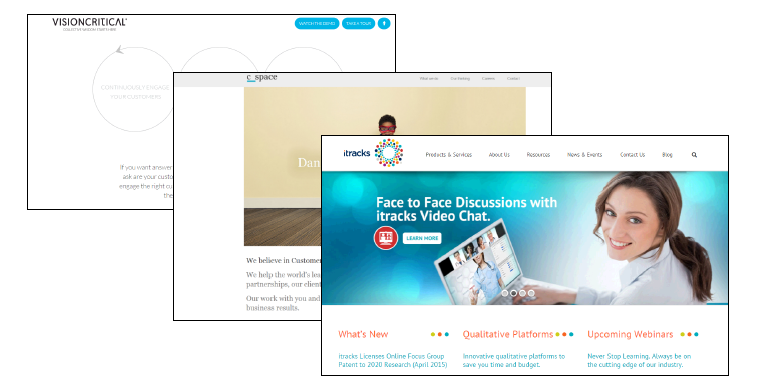
当然，组织这种大型的在线「焦点小组」存在着一定的风险，因为投资这种社区的ROI很难确定，在真正发掘出有价值的信息之前，投资者无法清楚的知道是否可以得到收获，即便有所收获，也很难准确的计算多企业经营业绩的精确影响。
b.描述型问题研究
描述型问题研究通常需要用常规的数据来描述一个相关群体的特点，类似下面这类问题：
什么样的客户会购买我们的产品？
我们产品的市场份额怎么样？
什么样的客户会购买我们竞争对手的产品？
对于描述型问题研究的数据收集，我们一般有主动收集和被动收集两种方式。
主动收集常用的方式是市场调研或者是直接让客户提供相关报告。
市场调研是所有世界500强公司都会采用的一种方式，通过市场调研可以收集到客户对产品的口碑，对品牌的满意度以及平时的消费习惯等等，从这些数据中提取出来的信息可以用来细分消费者。
现在有很多公司都提供这类调研服务，比如Qualtrics，SurveyMonkey，他们提供的往往不仅仅是单纯的收集服务，也会提供调研结果的分析服务。
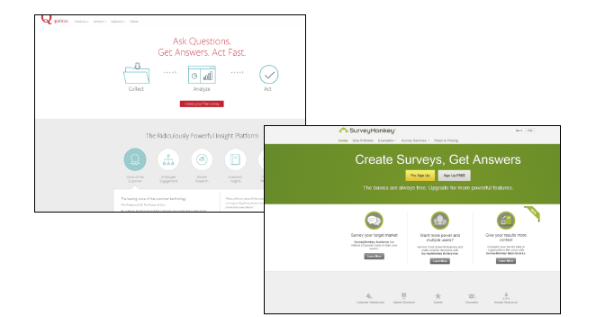
另一方面，基于移动设备的普及，通过移动设备进行调研是直接从客户那里获取信息的一种前沿方式，通过这种方式可以及时捕获客户的反应，并且可以根据时间和地点量身定做调研内容。
在这方面做的比较好的是InfoScout，他们会吸引和激励客户一旦完成某次购买，拿到小票之后，就用手机拍照上传，从这些看似零散的小票数据中，可以分析出很多有价值的信息。
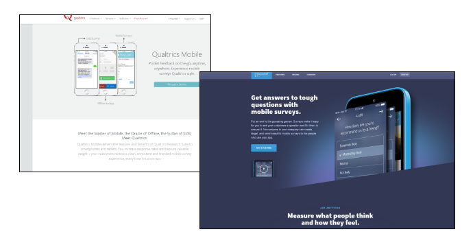
关于调研，我们最后举个净推荐值的例子。
我们可以在调研里就问客户一个问题「你会给你的家人、朋友或同事推荐某一个品牌的可能性有多大？」。把这种可能性分为0-10分：
9-10分为推荐者
7-8分为被动者
0-6分为批评者
净推荐值的计算方法为推荐者的百分比减去批评者的百分比。通过净推荐值分析，我们可以追踪品牌健康度，因为净推荐值和公司的股票价格和产品的销量都有关系。
被动收集的数据往往来自于扫描枪，电台、电视媒体，社交媒体，传统网站，移动App等。
扫描枪的一手数据可以帮助分析促销的效果；电台、电视等媒体的分析可以帮助我们了解谁在看什么节目，可以帮助我们制定广告植入策略；社交网站的数据可以让我们知道自己品牌被提到的频率，客户提到品牌的情绪活着了解到在社交媒体上开展某项活动的效果等信息；从传统网站和移动App也可以收集到客户的各种行为表现数据。
提供这类数据收集服务的公司有：AC尼尔森，IRI，SPINS，Topsy，Sprout Social等。
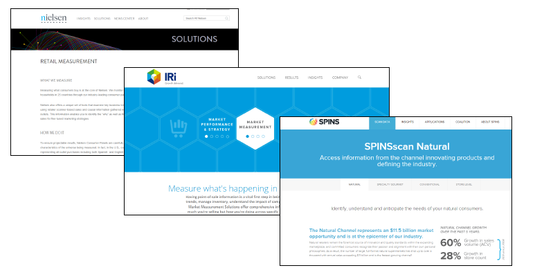
c.因果型问题研究
在最后讨论因果型问题研究之前，我们有必要先弄清关联型问题和因果型问题的区别。从字面上看，关联型问题指的是两个变量之间是有关系的，而因果型问题指的是一个变量的变化会影响另一个变量，因此这两种问题是有本质上的区别的。
判断一个问题是因果型问题，需要满足以下三个前提：
X和Y有关联
X必须先于Y发生
不存在影响X和Y的其他因素
举一个民间混淆关联型问题和因果型问题的例子，这个例子是「鸛会带来小孩」，就是看到谁家的屋顶停止鸛，那么谁家不久就会有新生儿诞生，所以有人认为新生儿是鸛带来的。我们来对比下是否满足上面提到的三个因素：
关联性：鸛总是停留在会有婴儿诞生的人家屋顶，是有关联的。
时间先后：先有鸛停留，再有婴儿诞生。
其他因素：鸛喜欢温暖的地方，有孕妇的房子保暖做的比一般人家里要好，所以鸛才停留。
因此，由于其他因素的存在，鸛和小孩诞生并没有因果关系。
而对于公司来说，有一个因果型问题的例子就是，假如我们升级改版我们网站的登陆页面，客户会购买更多我们的产品吗？
解决这类问题我们通常采用的方法称为A/B测试。即我们让一部分客户只可以访问我们的登陆页面A，让另一部分客户只可以访问我们的登陆页面B，然后对比这两波客户购买情况的先后变化。
提供A/B测试的公司有Optimizely，Leanplum等，通过这些测试数据可以指导企业网站的优化，移动App设计。
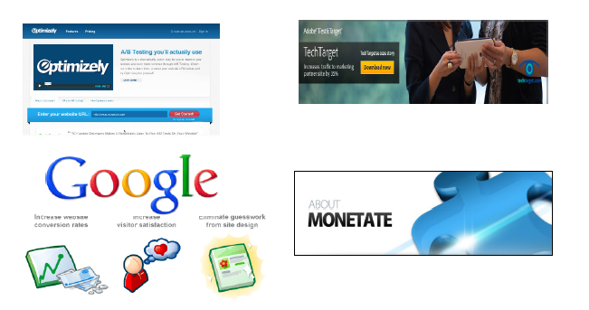
2.预测性分析：根据已有的数据对将来进行预测
当我们通过上述方法，收集了我们需要的数据，并对这些数据进行了初步的解释和分析之后，接下来我们可以做些什么呢？这一步，我们将要学习的是如果基于历史数据和客户的历史行为来预测未来的行为。
我门先来简单的介绍一个基本的预测方法：线性回归。
通过线性回归，可以基于历史数据，探究两个变量或者多个变量之间的关系，通过给这种关系寻找和建立可以用线性回归方程表述的模型，输入未来的自变量可以预测出因变量。我们以价格变化导致客户购买产品数量变化为例对线性回归加以说明。
一般来说，某个商品的单价越高，那么需求的数量越小，我们以下面这张表里的数据为例：
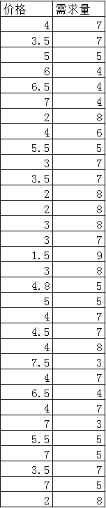
得到如下散点图：
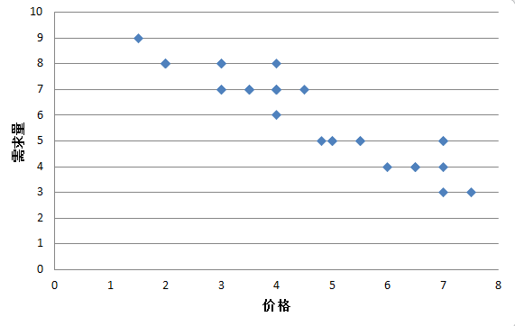
我们试着用一条直线来拟合这些点，目的是是所有点到这条直线的距离之和最小：
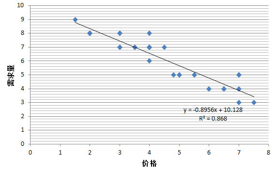
于是我们得到的线性方程为：
y = -0.8956*x + 10.128
其中y指的就是我们的需求数量而x指的就是产品的单价。
其中R的平方我们用R^2表示，用来衡量拟合优度（Goodness of Fit）。
拟合优度是指回归直线对观测值的拟合程度。度量拟合优度的统计量是可决系数（亦称确定系数）R^2。R^2的取值范围是[0，1]。R^2的值越接近1，说明回归直线对观测值的拟合程度越好；反之，R^2的值越接近0，说明回归直线对观测值的拟合程度越差。
把所有的历史数据代入这个方程进行计算，可以发现得到的每一个结果都十分的接近真实值：
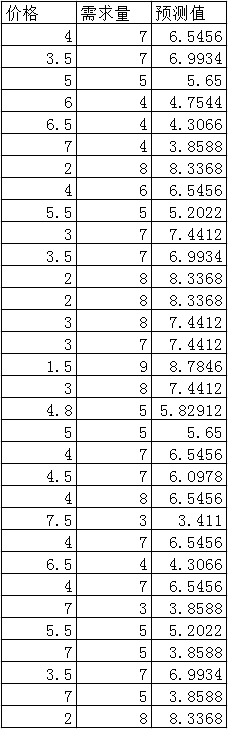
对于历史数据中不存在的价格，我们也可以进行预测：
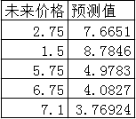
这样子的预测有什么作用呢？最直观的作用就是我们可以计算出一个最优的价格，使得我们可以获得最大的收入，具体的计算会在下面第三步规范分性分析中进行。
以上所展示的例子，只是一个因变量和一个自变量之间的关系，同样的原理，我们可以引申出有多个自变量的情况：
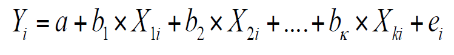
而实际商业活动中，恰恰是有者很多不同的因素会影响者最终的销量，比如竞争对手的价格，广告投放的多少，淡旺季的区别等等。
可见，在预测需求的问题上，采用回归的方式是一种比较可取的方式。
对于上面这类问题，我们之所以用回归方式进行预测是可行的，是因为因变量是一个相对连续的值，而在预测某些客户行为时，结果并不是连续的，而是离散的。我们接着来看下面这个例子。
某公司新推出一款手游，提供游戏内的一些虚拟道具的购买，比如可以购买每个月的双倍经验卡、每个月的金牌会员等等。我们的问题是，公司现在有这款游戏上线7个月以来，所有用户每个月的购买记录，需要预测接下来剩余的5个月，这些用户是否会有持续购买的行为。
历史数据如下图，只要某个月发生过购买行为，我们就记为1，反之则为0。
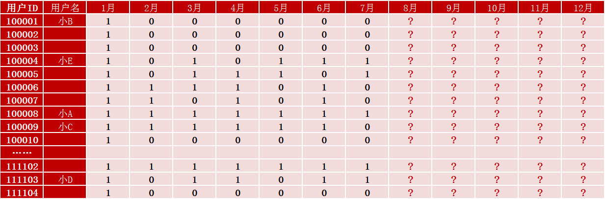
简单的分析上面的数据，我们会好奇以下问题：
a.像小A这样每个月都有消费的用户，是否接下来还是会每个月都消费？
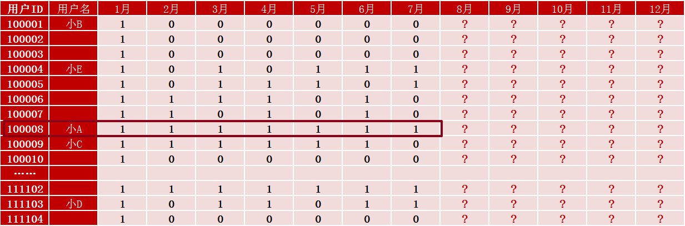
b.像小B这样就第一个月消费过之后再也没有消费的用户，是否接下来也不用指望他了？
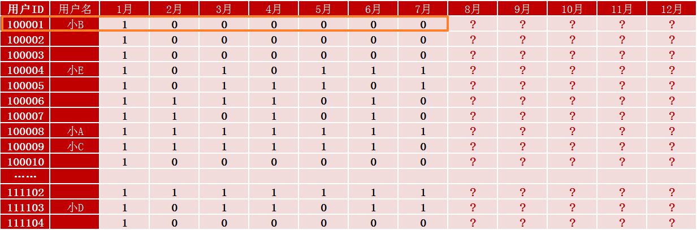
c.小C和小D相比较，接下来几个月谁会消费更多次呢？
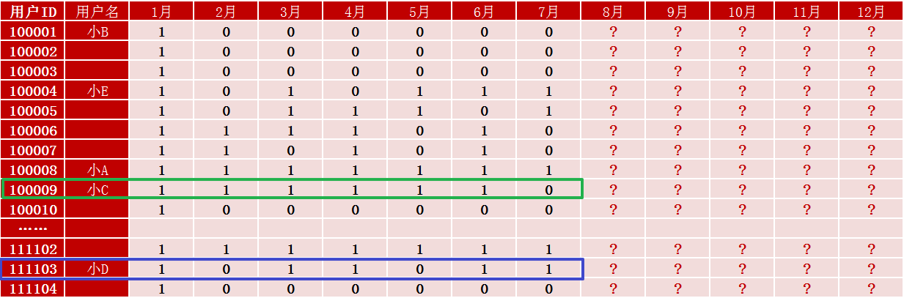
d. 小D和小E相比较，接下来几个月又是谁会消费更多次呢？
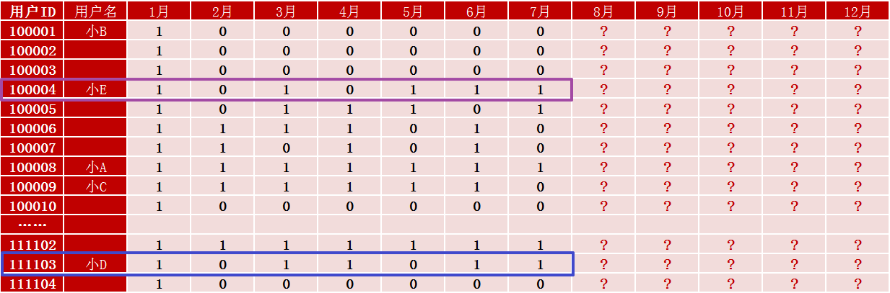
我们进行客户购买行为分析时，有三个指标是比较重要的，通常称之为「RFM」：
Recency：最近一次消费什么时候
Frequency：多久消费一次
Monetary：每次消费花费多少
在我们的例子中，我们并不关心具体用户花费的金额，因此，我们重点需要分析的是R和F。而这两个指标中，R相对F更重要一些，即最近一次是否有消费发生比之前消费的频率更重要。
如果要严谨的分析影响每个用户是否继续消费的因素有太多太多了，虽然小A此前每个月都有消费，但是讲不定从第8个月开始，他突然不玩这个游戏了呢？虽然小B已经连续6个月没有在这款游戏上花过钱了，甚至都已经不玩这个游戏了，但是谁又能肯定我们在第10个月开放了新区和新的游戏内容后小B又回来了呢？
我们想知道某段时间内，客户决定是否购买，这个决定的过程是怎样的。如果用回归模型会很麻烦，涉及到参数可能会有市场、经济、竞争、人口特征等等因素，这要收集尽可能多的数据。既然影响的因素有太多太多，我们无法考虑周全，那么索性，我们一个因素都不考虑，我们把每个月用户是否会继续购买用投硬币的方式来决定，可不可以？
答案竟然是：可以！
因为即便是我们收集到的数据已经尽善尽美了，但是现实中不可测的因素还有更多。想想你自己每天做的决定，有时候早上橙汁喝完了你就得去买，虽然本来没这个打算；或者你的孩子病了，家里漏水了等等看起来无足轻重的因素，恰恰会决定你的一天。
所以我们可以把决定的结果看成是随机的，就像抛硬币：正面买、反面不买。 就像站在高楼的天台看楼下人来人往，从我们的角度来看他们的随机性很强，有人左拐，有人右拐，但是对这些人来说，自己的行为都有正当理由。但我们是局外的旁观者，看不到那些理由， 所以我们不会根据温度、湿度或风速来推测他们是左拐还是右拐，我们干脆极端一点，建立一个客户行为的随机模型，就类似抛硬币一样，只不过，每一个用户的硬币不同，并不是正反面的概率都是一样的50%，专业术语叫做客户的异质性。因为从例子中就能看出显然小A继续购买的概率比小B要大。
同时，我们可以引入另一枚硬币，来判断用户是否还「活着」，这里活着，指的是还会继续玩此款游戏，会有继续消费的可能。通过这种引入两个随机变量的方式，我们就可以对这个预测问题进行建模，我们把这个模型称之为「买到死」模型。
这个模型只有三个输入的变量：
具体的模型实现和计算方式相对复杂一些，在此就暂时不列举了。我们直接来看计算的结果：
（有兴趣的朋友可以关注微信公众号「jianjian_hoo」之后回复:「BGBB」获取详细计算方法 ）
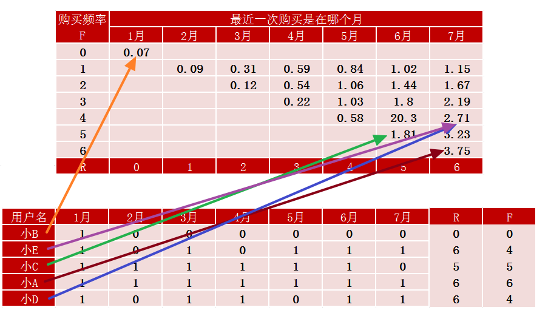
因为第1个月每个人都有购买行为，所以作为起始数据大家都是一样的，我们看在这之后6个月的购买行为。根据计算结果，小A虽然已经连续不间断的购买了6个月了，但是在剩下的5个月中并不是100%每个月都会继续购买，5个月中他可以会购买3.75个月。为什么会有小数点呢，因为这里的小A并不是一个人，而是代表了一群和他一样群体，有N多个像小A一样已经连续购买了6个月，那么这些人中有的会继续购买，有的可能会停止购买，那么根据我们的模型所计算得到的平均数为3.75。
另一方面，我们也没有完全放弃像小B这样的人群，他们在接下来5个月中的平均购买次数为0.07次，虽然很小，但是还是有可能的。
最有意思的是对比小C和小D，虽然从次数上看，在过去的6个月，小C购买了5次，而小D只购买了4次，但是小C在最关键的最近一个月并没有购买，因此，我们的模型在计算的时候，会很大程度的考虑到小C很有可能会变成一个「死」用户了，因此，从数据上看，预测的小C接下来5个月的平均购买次数仅为1.81次，而小D有2.71次。
最后是小D和小E，虽然两个人购买的月份不同，但是他们购买的频率和最近发生的时间都是一样的，因此，我们的模型会把他们归为同一类人，因此他们的预测结果是一样的，都是2.71次。
这种建模方式适用于很多商业场景，比如对于一些慈善机构预测未来人们是否还会持续给他们捐款；对于一些连锁酒店预测未来客户是否还会选择在他们的酒店留宿；银行预测是否可以从某些用户身上收取到循环利息等等。
3.规范性分析：提供行动指南，以求达成目标
通过上面的两个部分，我们充分的认识了什么是描述性分析，什么是预测性分析。通过描述性分析收集到的数据，我们可以观察出一些历史上存在的固有模式，而通过预测性分析，我们可以基于数据创建模型来预测客户未来的行为。最后的这一部分所谓的规范性分析，我们要学习到的是通过什么样的行动来帮助解决什么样的决策问题？
首先是问题的定义。一个需要我们去解决的问题，实际上是有着一系列的目标等着我们去实现，有着一连串的行动等着我们去执行，有着一个良好的模型可以连接我们的行动和目标。看上去很抽象，我们通过下面的例子来加深理解。
再一次引用在回归分析中用到的数据：
根据这个模型，我们想要解决的问题是：「制定一个什么样的价格可以拥有最大的销量？」。在这个问题中，目标是「销量最大化」，行动是 「改变价格」。从现有数据看，当价格是1.5的时候，有最大的销量9，我们能不能做的更绝呢？当然可以，我们免费赠送，那么销量可以超过10，并且我们甚至可以倒贴，那么销量可以是无限。
当然没有商人愿意做这样的生意。所以我们的第二个问题就是： 「制定一个什么样的价格我们会有更多的收入？ 」。在这个问题中，目标变成了 「收入最大化」，而行动依然是 「改变价格」。由于问题变化了，我们需要一个新的模型来解答这个问题。因为我们的目标取决于单价和销量的乘积，而不仅仅是单价一个因素了。当我们提高价格的时候，单个商品的收入是增加了，但是总的销量减少了，因此我们需要寻找一个能使总收入最大的点。
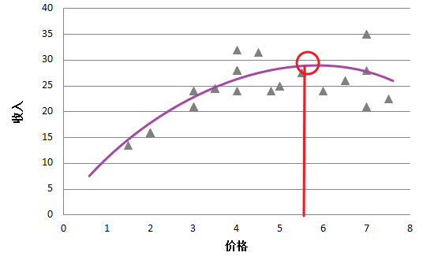
根据拟合的结果，我们大致可以判断将价格定在5.6左右会有最大的收入。
通过上同两个例子，我们应该可以理解什么是问题，什么是目标，什么是行动，以及什么是连接目标和行动的模型了。我们接着再考虑得实际一点，引入另一个变量「成本」，需要解决的问题是：「怎么样制定价格可以使得我们的利润最多？」。利润等于收入减去成本，这里假设单个商品的成本是2元。
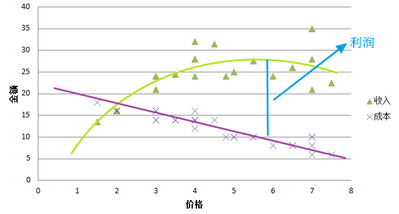
通过上面这样的图形或者说是模型很难准确的找到制定什么样的价格可以得到最好的利润，那么我们单独看价格对利润的影响，可以得到下图：
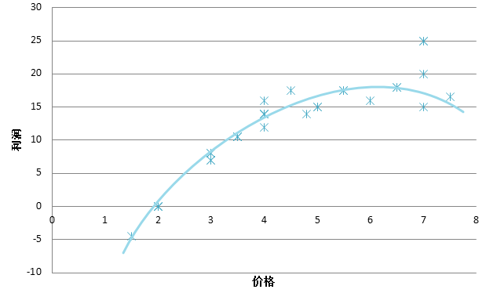
当定价低于成本时，显然会是负利润，而且卖的越多，亏的越多。利润最高的定价目前看上去要略高于先前收入最高时的定价，达到了6.5左右。如果从另一个角度来思考，把追求收入最大化的情况定义为在成本为0时的利润最大化，这是否意味着，随着成本的提高，我们的定价也应该相应的提高呢？
那么，我们把追求利润最大化的问题，就可以转变为我们需要上调价格到一个再也无法给我们增加利润的值。具体的说，当我们调高价格的时候，随着销量的减少，成本是一直在减少的，而收入的变化却是一个曲线，因此我们要做的就是将价格上调到某个收入的增长和成本的减少正好相同的点。在这个过程中，收入的变化我们称之为 「边际收益」，成本的变化我们称之为 「边际成本」。所以，最终我们要达到的目标就是「边际收益」等于「边际成本」。
通过以上三个例子，我们对怎么样定义问题，怎么样建立模型将行动和目标联系在一起以解决问题，有了清晰的理解。实际的商业活动中，我们还需要分析客户的群体购买行为，竞争对手的情况，以及我们投放广告所造成的影响等等，所有的这些问题我们都可以采用上面这样的分析步骤来进行，只不过在细节上，所要收集和解释的数据，所要建立的模型会有所差异。
我们来做个小结，上面提到的三个步骤，其实包含以下五个要点：
数据，怎么建立起准确的基础框架，怎么收集准确的数据？
挖掘数据，要从基本的数据挖掘入手，而不是急于建立看上去很酷的模型。
预测，重点是一次只对一个顾客做预测。
最优化，比如定价最优化，邮件最优化，折扣最优化，当我们有了准确的商业问题和数据之后，挖掘好数据，配置好了模型，之后我们就要把它最优化，因为那是公司的目标，公司想要最大化收益和利润。
执行商业操作，公司依靠分析的结果来做决定。
下面，让我们来看一些利用客户数据分析来提高公司服务和增加利润的案例。
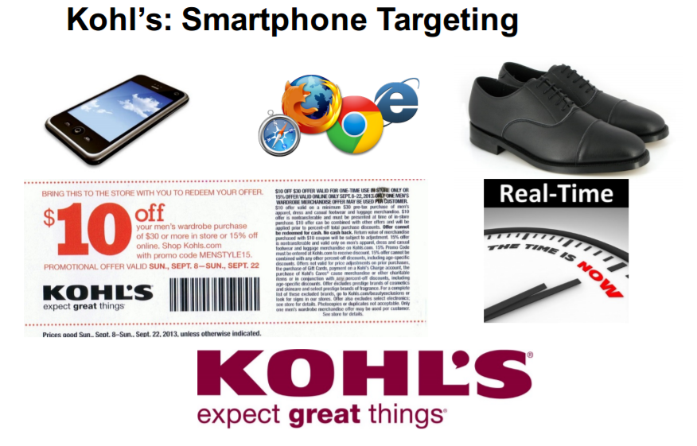
美国科尔百货公司，是一个很大的全国性连锁百货公司，作为实体零售商，科尔百货是这样做的，他们使用智能手机定位，当你一进百货店，他们就会得到你的相关地理空间数据（通过客户手机自动接入商场wifi实现，通过设备的IP来分辨是谁），假设他们知道你正站在展示鞋子的货架前，他们就能够像你发送一个鞋子的即时打折信息。
我们用上面提到的五个要点对次进行分析，科尔百货为什么能够做到这点？他们通过手机和wifi网络，获得了数据，知道这个人是你，他们或许把这个信息与你在他们网站上的活动联系起来，或许与你的会员卡信息和其他实体店的资料联系起来，他们知道你实际在店内所处的位置，现在他们采取的行动是根据你所在的位置，针对你专门发一条打折的信息，这种数据是极有价值的，因为推销就是在正确的时间，正确的地点，推销正确的产品。
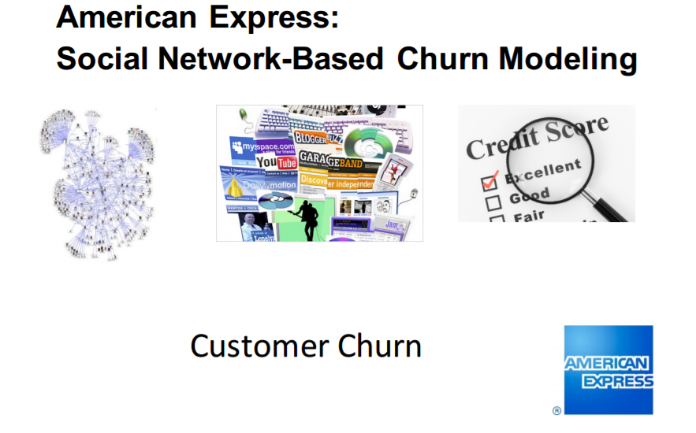
美国运通信用卡，遇到的最大问题之一是客户流失。他们希望知道谁会放弃使用运通卡，以及为什么会放弃。运通公司发现，从你的社交网络数据中，能清楚的预测你是否会成为流失客户。现在很多公司都在使用美国运通的这种做法。他们进行数据采掘，合法的从互联网上采掘各种数据，比如你在Facebook上说了什么话，有多少朋友，在Flickr上发表了什么照片，诸如此类的数据信息，把它们作为预测你是否会流失的额外变量。比如你今天发了一个状态说：「哦，我破产了，接下来的日子咋过呀！」那么这句话对于预测你可能成为流失客户或者无力偿还后续的信用卡账单提供了相当有价值的信息。
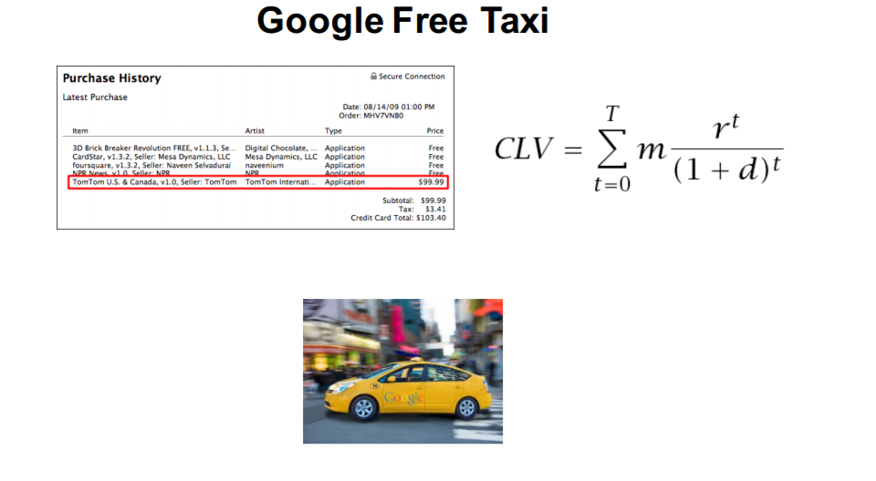
谷歌免费无人驾驶汽车，也许你还不知道，谷歌在过去五年一直在研发无人驾驶汽车。他们看到的一个机会是可以使其成为赚钱的工具。试想一下下面这个场景，你总是在某家超市的线上网店购买各种各样的生活用品，对于这件超市来说，你无愧为一个优质客户。谷歌得到了这个信息，他们开始和这家超市合作，可以提供免费的无人驾驶汽车到你家接送你来回超市，或者可以直接在你下单之后派出免费的无人驾驶汽车到超市把你订购的货品送到你家门口，这样的事情并不是幻想，而是正在发生。我们可以很肯定的说在未来的10年里，你不仅会看到无人驾驶的汽车跑在路上，而是与很多分析和预测捆绑在一起的无人驾驶汽车。
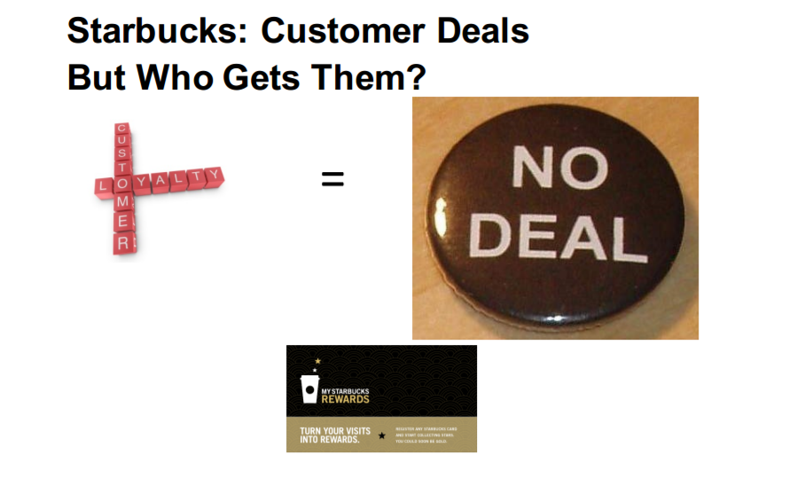
星巴克，是一家绝顶聪明的公司。他们认为忠诚的客户不享受好的折扣。通常情况下，我们会把最好的折扣和条件留给最好的客户，这样做对吗？答案是：不对！最好的条件应该留给拿到条件后会改变他们行为的人。比如你天早上八点都会去星巴克来一杯咖啡，那么给你打折会增加你去的次数吗？你还是每天早上一杯。星巴克通过他们客户的积分卡意识到这一点，他们会把折扣留给在忠诚度边缘徘徊的顾客，目标是把不忠诚客户变成忠诚客户。所以他们把数据分析带到了另一个层次，在这个层次，他们意识到，带来最高收入的客户不需要你最好的对待，你要最好对待的是投入后能带来最高产出的客户。
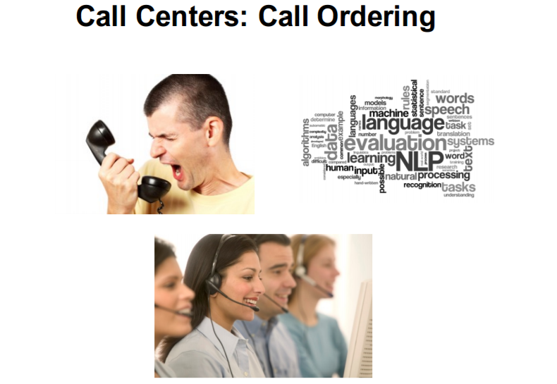
电话客服中心，我们在生活中或多或少都后这种电话客服有所接触。想象一下，你给你的移动电话服务商打了投诉电话，对着电话喊叫，发泄你的不满，他们又莫名其妙的乱扣费了。这时会发生两件事，头一件事，对方知道打电话的是你，因为你是用你自己的手机号拨打的电话，他们能够看到你的消费金额，能看到你是不是他们的老客户，或是VIP客户；第二是他们可以通过语音识别听出你的语气，在一开始就现安抚你，或是后台系统直接把你接入一个擅长处理生气客户的客服人员，这是数据分析得以应用的一个很大可能。
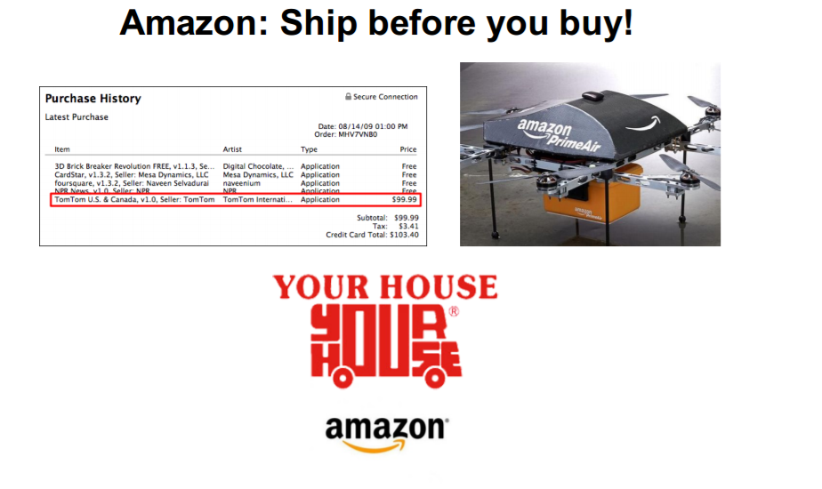
亚马逊，可以做到在你下订单之前就发货。从图上你可以看到一个人的购买历史和一架无人机，当然，我并不认为现阶段亚马逊会真的指挥无人机飞到你家给你投递包裹，但是亚马逊能够做的事是在你购买之前就预测到你要买什么，可以先把货物运到你家附近的仓库或零售商，你一下订单，当天马上就能收到货物。亚马逊为什么能够做到这一点？首先，他们有很可靠的数据，因为他们从每个单一客户的层面跟踪数据；其次，他们有推荐引擎，用来构筑预测模型，可以预测你要买什么；第三，他们有完善的分销网络，不仅可以送货到你家，还能送到最近的网点；第四，他们有能力来实施并且就此服务收费，这是亚马逊的金牌加金牌服务，正常的情况可以是免运费的，但是如果你希望当天到达，需要支付额外的费用。
想象一下，客户数据分析带给这些公司的强大力量吧。
最后我希望大家都可以喜欢我带来的这些内容，记住客户分析的五个要点，重要的事情再说一遍：
永远从更好的数据入手
进行客观合理的挖掘数据
建立准确的预测模型
对未来进行最优化
在实际决策中使用并执行